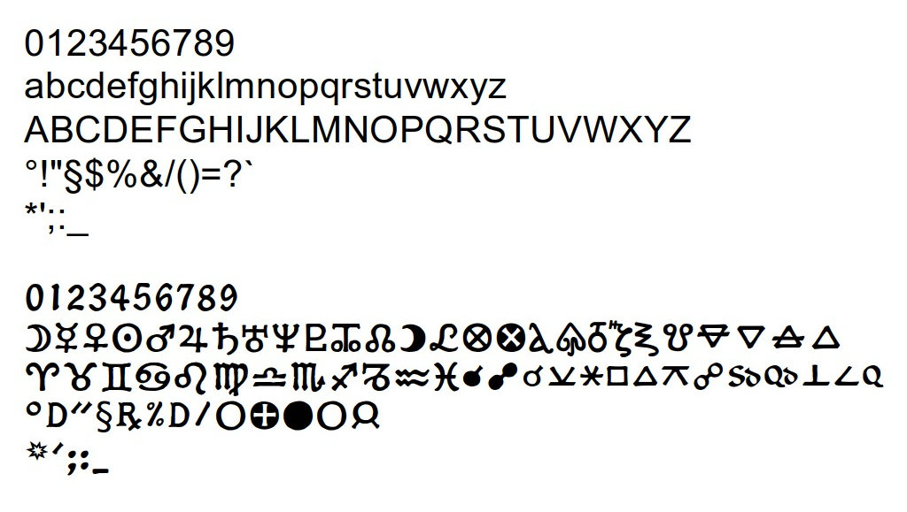

DOWNLOAD
Astronom.ttf
Astronom.ttf
Astronom astrological font in TTF format.

Astronom astrological font
Glyphs of Astronom astrological font
Astronom Font
Download a Free Astrological Font
Astrological Sigils and Font
The characters for this font were scanned from illustrations in an old book and with the help of PhotoShop, converted into TrueType Format (TTF) and eventually corrected using the program Fontforge.When the author was designing the astrological font used for these texts, a standard font was required as a placeholder. To access the individual characters in any font, they needed to be assigned to already existing letters or numbers in a standard form.
For historical reasons in the computer world, at the root of all that is the ASCII layout. The association of ASCII letters and astrological characters was deemed to require an easily remembered cross reference. When using the font in a word-processor, typing a capital A will produce the sigil for Aries.
As such, the astrological signs of the zodiac are like consonants, resonating a particular meaning. Being most fundamental they were assigned to the capital letters starting at A.
Signs:
A = A Aries, B = B Taurus, C = C Gemini, D = D Cancer,
E = E Leo, F = F Virgo, G = G Libra, H = H Scorpio,
I = I Sagittarius, J = J Capricorn, K = K Aquarius, L = L Pisces
Similarly, the planets, are like vowels changing the expression of a word and were assigned to the lower case letters. A = A Aries, B = B Taurus, C = C Gemini, D = D Cancer,
E = E Leo, F = F Virgo, G = G Libra, H = H Scorpio,
I = I Sagittarius, J = J Capricorn, K = K Aquarius, L = L Pisces
Planets:
a = a Moon, b = b Mercury, c = c Venus, d = d Sun, e = e Mars,
f = f Jupiter, g = g Saturn e = h Uranus, f = i Neptune, g = j Pluto
There are also four special case letters required for our fundamental alphabet, the elements.
a = a Moon, b = b Mercury, c = c Venus, d = d Sun, e = e Mars,
f = f Jupiter, g = g Saturn e = h Uranus, f = i Neptune, g = j Pluto
Elements:
w = w Earth, x = x Water, y = y Air, z = z Fire,
Other sigils, symbols and characters exist in astrology, which are mostly for calculated points such as for aspects or lots but these are more like mathematical operators than letters.
w = w Earth, x = x Water, y = y Air, z = z Fire,
Aspects:
M = M Solar Eclipse 0°
N = N Lunar Eclipse 180°
O = O Conjunction 0°
P = P Semi-Sextile 30°
Q = Q Sextile 60°
R = R Square 90°
S = S Trine 120°
T = T Quincunx 150°
U = U Opposition 180°
V = V Semi-decile/Virgintile 18°
W = W Quindecile 24°
X = X Decile/Semi-Quintile 36°
Y = Y Semi-square 45°
Z = Z Quintile 72°
[ = [ Tredecile 108°
\ = \ Sesquiquadrate 135°
] = ] Biquintile 144°
M = M Solar Eclipse 0°
N = N Lunar Eclipse 180°
O = O Conjunction 0°
P = P Semi-Sextile 30°
Q = Q Sextile 60°
R = R Square 90°
S = S Trine 120°
T = T Quincunx 150°
U = U Opposition 180°
V = V Semi-decile/Virgintile 18°
W = W Quindecile 24°
X = X Decile/Semi-Quintile 36°
Y = Y Semi-square 45°
Z = Z Quintile 72°
[ = [ Tredecile 108°
\ = \ Sesquiquadrate 135°
] = ] Biquintile 144°
The Lots or Daimons:
o = o Tyche / Pars Fortuna / Part of Fortune / Lot of Fortune / fate of the moon
p = p Daimon / Part of Spirit / fate of the sun
q = q Ananke / fate of mercury
r = r Eros / fate of venus
s = s Tolme / fate of mars
t = t Nike / fate of jupiter
u = u Nemesis / fate of saturn
o = o Tyche / Pars Fortuna / Part of Fortune / Lot of Fortune / fate of the moon
p = p Daimon / Part of Spirit / fate of the sun
q = q Ananke / fate of mercury
r = r Eros / fate of venus
s = s Tolme / fate of mars
t = t Nike / fate of jupiter
u = u Nemesis / fate of saturn
About
Hi, my name is Rod Schneider and I have created this website to illustrate how, with the help of astrology, that negativity can be converted into something more positive. The astrology being shown here is rooted in the most ancient inceptions derived from Hermetism. It is technical but in the hands of a practioner already familiar with astrology has great potential to be helpful. There is also much help for non-astrologers to use astrology in a different manner, namely with cycles and phases.Comments and contributions are always welcome.
Contact: rodschneider35@gmail.com